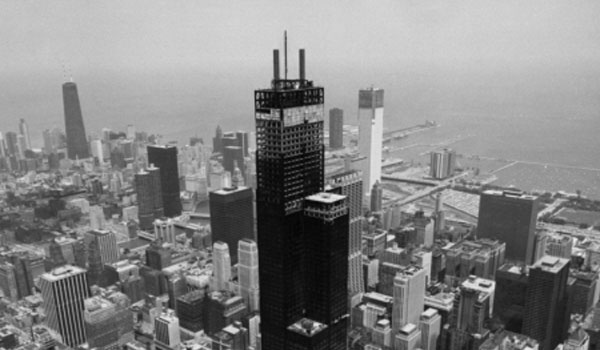
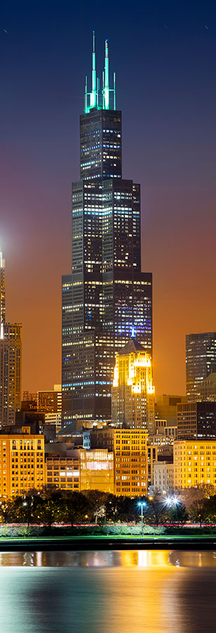
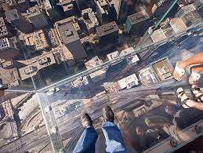

Known as the Sears Tower until 2009, The Willis Tower was the world's tallest building until 1998. However, its rich history began many years before that. Here are some interesting historical facts about The Willis Tower:

Sears Roebuck and Company first envisioned this project in 1969, but did not break ground on the project until 1970.
It took 3 years and 2,000 construction workers to complete the tower.
In 1974, The Skydeck opened on the 103rd floor, allowing visitors to see Chicago and Lake Michigan from a bird's eye view.
In 1984, broadcast antennas are added to the top of the building.
In 1985, the tower has a new atrium built.
In the year 2000, the Skydeck has a multi-million dollar renovation.
2009 is the year the Sears Tower offically became the Willis Tower. With this change also came the new Ledge experience on the Skydeck.

Numerical Facts
12th tallest building in the world
2nd tallest building in North American/Western Hemisphere
1,450 feet high (443 meters) and 110 stories tall
1,730 feet high (520 meters) including the building’s twin antennae
4.56 million gross square feet = 101 football fields
76,000 tons of steel
The combined weight of the building is 222,500 tons
Average sway is approximately 6 inches from true center
The tower has 16,100 bronze-tinted windows
25,000 miles of electrical cable
25 miles of plumbing
80 miles of elevator cable
145,000 light fixtures
43,000 miles of telephone cable
Cost more than $175 million to build
104 elevators moving 1,200 feet per minute
99th floor event space
3 entrances
Skydeck | The Ledge
In 2009, when Sears became Willis, the Skydeck was completely revamped. Instead of being a 103rd floor lookout point, visitors are now able to step into windows that extend from the building, offering views straight down over the city of Chicago! They say the inspiration for The Ledge came from hundreds of forehead prints left behind on the Skydeck windows each week, just like in Ferris Bueller's Day off!
The Ledge is 1,353 feet and 103 stories up. It is the highest observation deck in the United States. It is made of three layers of half-inch thick glass laminated into one seamless unit. It's built to withstand four tons of pressure and can hold 10,000 lbs!
However, the best part of The Ledge is that on a clear day, views can span 50 miles and four states: Illinois, Indiana, Wisconsin and Michigan! I guess there are some advantages to living in the flat lands!